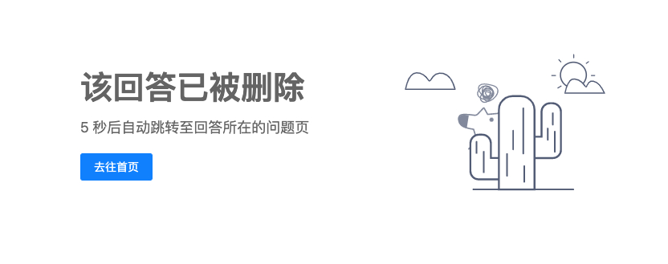
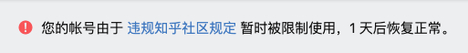
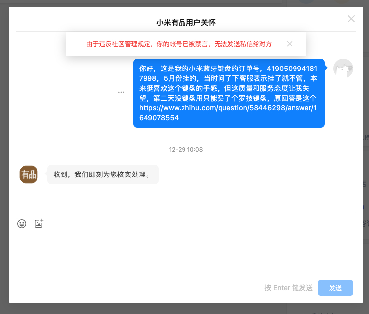

被小米有品公关了
事情是这样的，我前两天在收拾桌底的时候看到了报废的，小米生态米物双模蓝牙键盘。一想就来气，这键盘19年买之后在办公室放了半年，一直在外地出差，今年只用了半年后刚过保修期，蓝牙连接功能就挂了，双模变单模，只剩USB连接能用。
蓝牙坏了就坏了，又不是不能用对吧。但后来发现其实USB连接也坏了，每次换上新电池都撑不了一周。我就问小米客服，这怎么办啊，保修期过了，那我送修可以吧，客服回答，键盘是不能修的。那没办法我认栽，办公室没键盘用了，想到家里的罗技三年了，怎么用怎么顺心，第二天我在京东买了个罗技。
看到这个半年前报废的键盘还在桌底下搁着，我就去知乎搜索了相关问题，并答了个问题，米家有品所售卖的产品，其实际质量如何？ - 知乎我说，质量可以的也有，质量不行的也有，最反感的是小米的蓝牙键盘，保修期刚过蓝牙功能就挂了。
毕竟在小米有品买过不低于5000元东西了，这回答客观中肯。
然后收到了一个未认证的机构号 小米有品用户关怀 的评论，说请私信一下订单号，帮您看看之类。我一想，唉，小米有进步了？我一直觉得这是家二流企业，起码在客服售后上。
然后发了私信：
你好，这是我的小米蓝牙键盘的订单号，4190509941817998，5月份挂的，当时问了下客服表示挂了就不管，本来挺喜欢这个键盘的手感，但这质量和服务态度让我失望，第二天没键盘用只能买了个罗技键盘，原回答是这个: https://www.zhihu.com/question/58446298/answer/1649078554
然后昨天收到了电话，电话总体的意思是，我们目的想查查你之前联系的客服做了什么说了什么，打电话的重点不是给你解决问题，解决方案是你付费80%自行去线下置换。
我一想，200块钱的键盘，自费80%的价格去置换。算上路费邮费时间的成本，小米打这通电话是在打发用户，怎么不让我重新买一个，当然我也没反应，只是说，你们这个解决方案没什么用。
接完买花更新了下知乎回答，说了这个事。我说之前感觉是质量不行。现在是感觉客服也不行，没有解决问题的意愿就不要装得很关心的样子。键盘是过保了，但换成你，你舒服吗？不光不能得到售后，还不能说。
今天一早登陆知乎，发现答案不光被删了，还被封号了，很了不起。可能不是屌丝吧，不是雷军的朋友而是友商派过来捣乱的。



而且因为在雷军微博底下说了此事，还被所有小米高管集体拉黑了，他们本人是没空做这事的。
小米果然还是熟悉的小米，以前一直觉得他们卖手机电脑P宣传图，造假造得难看了点，现在发现这家企业还有点恶心。但我还行，并没有感到多大意外，毕竟对对小米这厚道企业期望也没多高。
当然，华为这种神奇的企业的产品，我是碰都不敢碰的，要是出了问题，怕是不光维权无门同时还要被查水表。